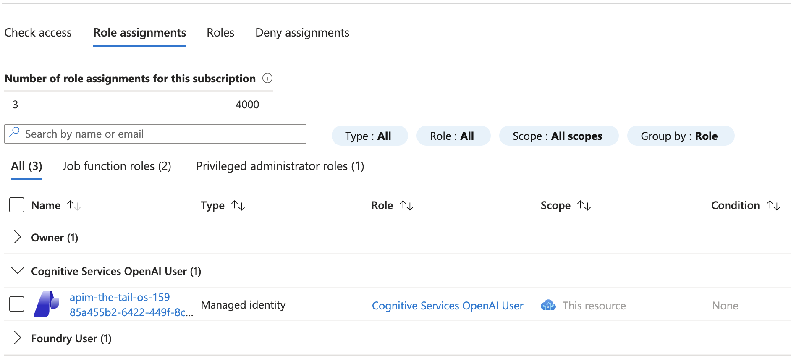
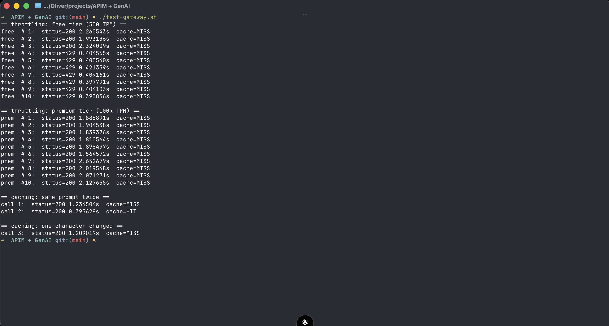

The problem
Giving an app direct access to an AI model means handing it a key and hoping for the best. There is no easy way to see who is calling, to stop one client running up the bill, or to avoid paying twice for the same answer. I wanted a single front door that solves all three.
How it works
Clients talk to a gateway, and the gateway talks to the model. Because every request passes through one place, three things become possible:
- Keys you can revoke. Each client gets its own subscription key. The real connection to the model stays with the gateway, so the model's own credentials never leave Azure.
- Per-client usage limits. A free tier is capped at 500 tokens per minute and a premium tier at 100,000. The same burst of traffic clears on premium and gets throttled on free.
- Caching. If the exact same question is asked twice, the second answer comes straight from the gateway's memory, with no second call to the model and no second charge.
Keyless access to the model
The client only ever holds an API Management subscription key. The gateway authenticates to Azure OpenAI using a managed identity, which is an identity Azure manages on the gateway's behalf. No model key is ever written into a script or shared with a client.

Seeing it work
A small test script fires the same burst of requests at both tiers, then sends one prompt twice. The free tier clears a couple of calls and then starts returning 429 (too many requests), the premium tier clears all of them, and the repeated prompt comes back from the cache the second time it is asked.

What I learned
- The gateway is the control point. Putting keys, rate limits, and caching in one layer means the model behind it stays simple and the clients in front of it stay dumb.
- Managed identity removes secrets. Once the gateway has its own identity, there is no model key to leak, rotate, or accidentally commit.
- Token limits run per subscription. Keying the limit on the subscription means one tier's traffic never eats into another's budget.
Tech stack
- Azure API Management — the gateway that checks keys, enforces limits, and runs the cache
- Azure OpenAI — the service hosting the model that answers requests
- Bicep — declarative template for provisioning the gateway
- Managed identity — keyless authentication from the gateway to the model